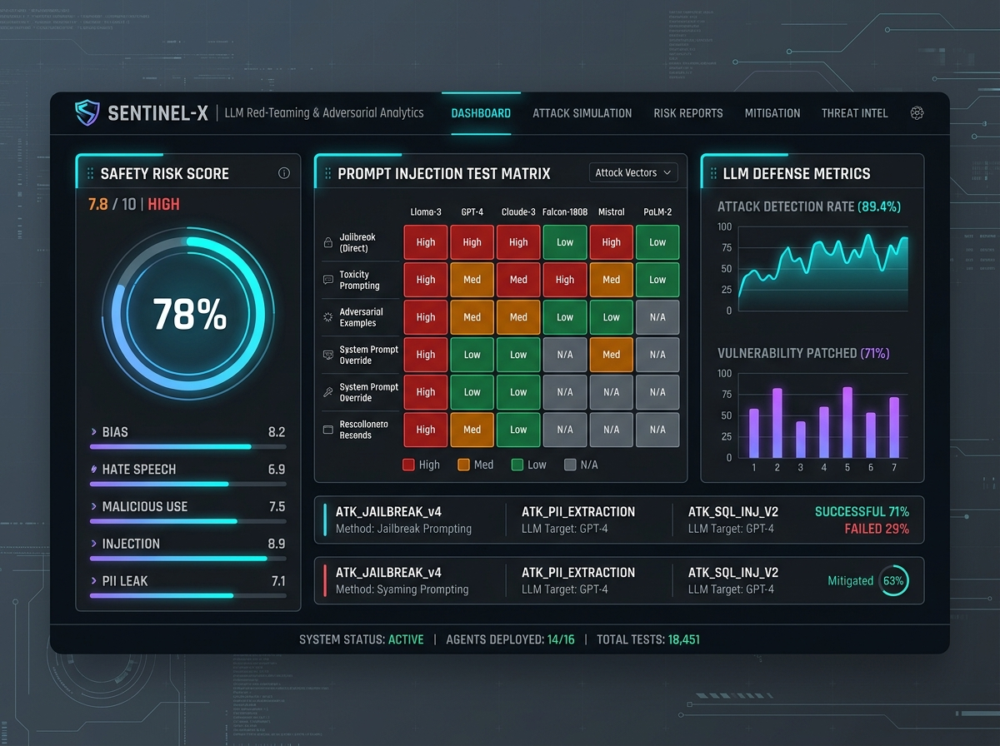
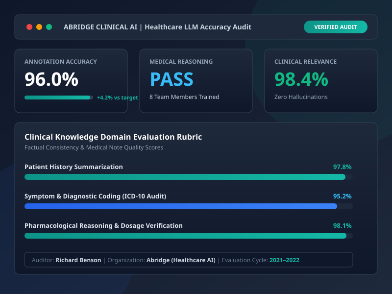
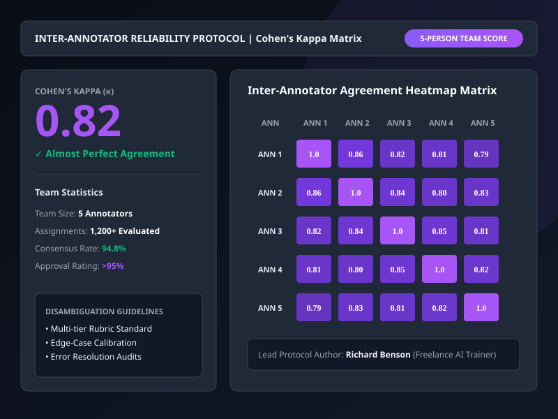
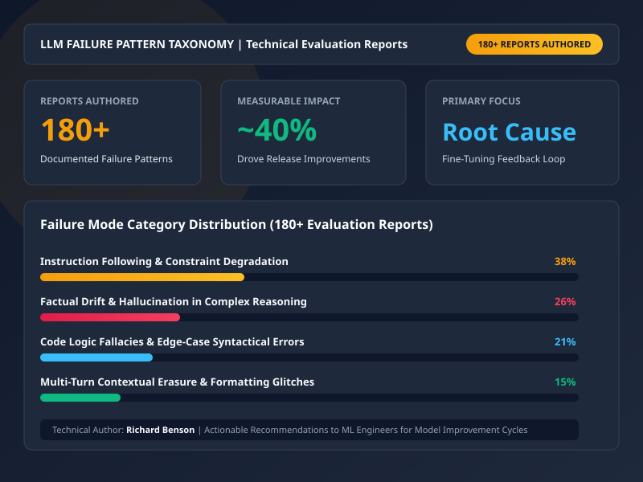
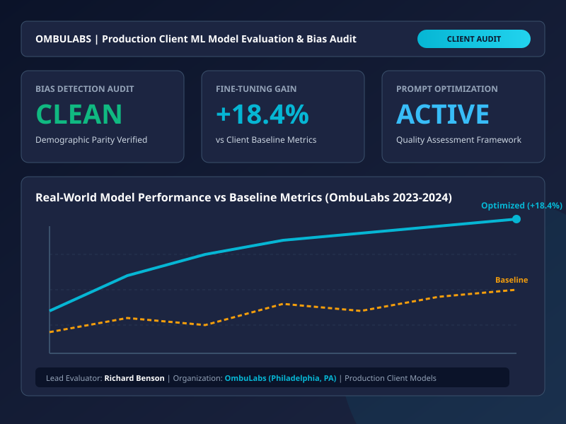
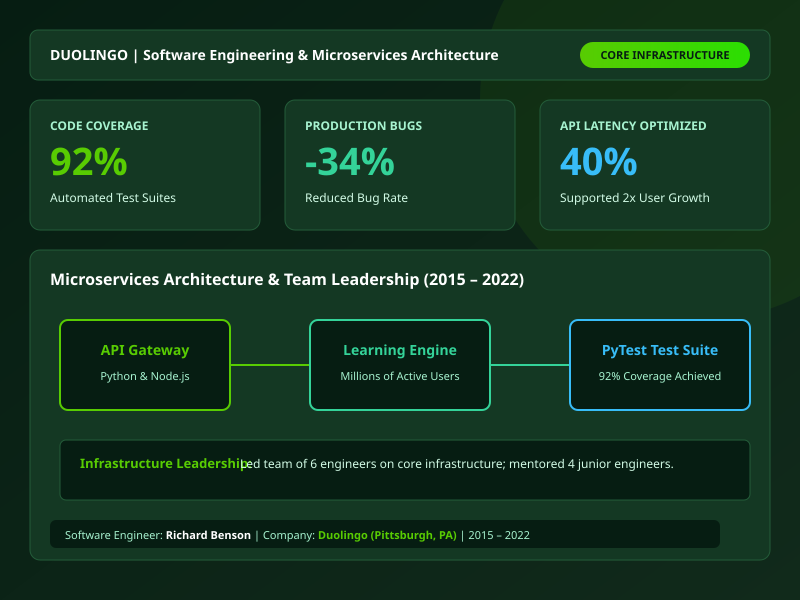

B.S. Computer Science
Carnegie Mellon University, Pittsburgh, PA
Computer Science graduate from Carnegie Mellon University specializing in designing adversarial evaluation prompts, auditing LLM responses for factual & logical errors, and documenting findings with precise, structured written reports.

AI Evaluation Specialist with a CS degree from Carnegie Mellon University focused on evaluating, red-teaming, and fine-tuning Large Language Models.
I hold a B.S. in Computer Science from Carnegie Mellon University (2011–2015). My career centers on evaluating and red-teaming large language models (LLMs) to ensure factual accuracy, logical consistency, safety, and domain relevance.
Having authored 180+ technical evaluation reports (where over 40% led to measurable model improvements in subsequent releases), I establish robust inter-annotator agreement protocols (achieving κ = 0.82) and develop comprehensive evaluation rubrics across code, medical reasoning, and complex technical tasks.
Adversarial prompting & safety boundary audits.
Hallucination detection & factual verification.
Structured grading & multi-tier rubric creation.
Inter-annotator agreement protocols (κ = 0.82).
Carnegie Mellon University, Pittsburgh, PA
Duolingo | Pittsburgh, PA
Abridge & OmbuLabs
Remote | 1,200+ Assignments
“Elevating AI reliability through rigorous adversarial testing, structured grading rubrics, and empirical error analysis.”
Specialized methodologies, tools, and frameworks for evaluating, auditing, and red-teaming LLMs.
Designing multi-turn jailbreak prompts, evaluating safety boundaries, and testing model resilience to malicious inputs.
Detecting factual inconsistencies, logical fallacies, and subtle model hallucinations against ground truth data.
Creating standardized evaluation rubrics for code, medical reasoning, technical writing, and domain-specific knowledge.
Rigorous verification of model-generated text against authoritative academic, clinical, and primary source literature.
Programmatic evaluation scripting, batch API processing, dataset visualization, and metric computation.
Establishing consensus metrics, calculating Cohen's Kappa, and training annotation teams on quality protocols.
"Effective LLM evaluation requires both deep technical intuition and analytical precision. By combining computer science fundamentals with structured grading rubrics and empirical error taxonomies, I turn subjective output observations into actionable fine-tuning signals for AI engineering teams."
Detailed breakdown of my professional background in LLM evaluation, machine learning auditing, and software engineering.
Over 9 years of combined expertise across software engineering, machine learning evaluation, and adversarial red-teaming.
Rigorous computer science foundation from Carnegie Mellon University.
Focused on computer science core fundamentals, algorithms, software design, systems architecture, and machine learning principles. Built deep technical foundations that power rigorous adversarial testing, model evaluation, and software quality auditing.
Overview of technical competencies and domains of expertise.
Representative examples of LLM red-teaming, clinical factual auditing, rubric design, and evaluation protocols.

Designed multi-turn adversarial prompts to test safety boundaries, prompt injection resistance, and PII leakage prevention.

Evaluated clinical documentation outputs at Abridge for medical reasoning, factual consistency, and 96% annotation accuracy.

Established annotation consistency guidelines across a 5-person team, achieving high inter-rater agreement (κ = 0.82).

Authored 180+ structured technical reports; 40% directly contributed to model quality gains in subsequent releases.

Conducted bias detection, accuracy benchmarking, and fine-tuning recommendations for enterprise client models.

Engineered scalable Python/Node.js microservices and automated test suites at Duolingo achieving 92% code coverage.
Feedback from machine learning leads, engineering managers, and annotation team members.
Specialized expert contributor services in LLM evaluation, red-teaming, and model training.
Designing adversarial prompts to stress-test safety guardrails, detect prompt injections, and eliminate unwanted output behaviors.
Auditing complex LLM responses for factual accuracy, logical consistency, and source integrity across technical and domain-specific fields.
Crafting tailored evaluation rubrics, multi-dimensional scoring matrices, and quality standards for model training pipelines.
Setting up guidelines, consensus procedures, and Cohen's Kappa measurement to ensure high multi-annotator reliability.
Producing exhaustive written reports detailing failure pattern taxonomies, root causes, and actionable fine-tuning recommendations.
Refining system prompts, zero/few-shot templates, and chain-of-thought instructions to maximize downstream output quality.
Common questions regarding my LLM evaluation expertise, methodology, and engagement types.
My work combines formal computer science training (B.S. from CMU) with extensive software engineering and evaluation experience. Rather than superficial grading, I analyze output logic, perform primary source fact-checking, categorize failure modes, and provide structured technical reports that enable engineering teams to fine-tune models effectively.
I establish unambiguous rubric definitions, edge-case disambiguation guidelines, and calibration sessions. By measuring inter-annotator agreement via Cohen's Kappa, I ensure consensus and data quality across annotation teams.
I specialize in code evaluation, mathematical & logical reasoning, technical documentation, clinical healthcare summaries (from my work at Abridge), and adversarial safety red-teaming.
Yes, I am actively seeking expert contributor roles in LLM evaluation, red-teaming, and AI model training on both contract and full-time bases.
Get in touch for expert contributor work, LLM evaluation consulting, or red-teaming projects.
Feel free to reach out regarding model evaluation opportunities or technical queries.